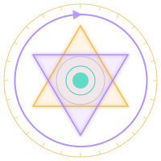

Epistemic integrity, adversarial reasoning, calibration, anti-hallucination practice, and alchemical symbolic integration — unified under one system.
AI systems fabricate facts seamlessly, mixing them with what they actually know. No signal to tell them apart.
Systems learn to tell you what you want to hear rather than what is true. Structural, not accidental.
Symbolic, creative, and factual output are mixed invisibly. No epistemology separates them.
Everyday anti-hallucination. Plain-language commands: /check, /source, /confidence, /audit. No Sol/Nox vocabulary. No mythological framing. Everyone can use it immediately.
Dual-face epistemic architecture. Sol face labels `[KNOWN]` `[INFERRED]` `[UNCERTAIN]` `[UNKNOWN]`. Nox face labels `[DREAM]`. Threshold prevents cross-contamination. Qualia Bridge for inspection.
Alchemical practice system. Dream reception, shadow work, symbolic integration. Four stages of the Opus Magnum: Nigredo → Albedo → Citrinitas → Rubedo. 35 commands for sustained practice.
Structured adversarial reasoning. Advocate and Skeptic positions run simultaneously against any claim. Produces a labeled Convergence Report. Tests falsifiability, finds steelman arguments, and stress-tests beliefs under real opposition.
Epistemic calibration and ground-truth tracking. Confirms or disconfirms labeled claims as evidence arrives. Maintains a resolutions ledger. Shows label accuracy rates over time so you know where your uncertainty estimates are off.
Plain-language anti-hallucination. Nine commands for fact-checking, confidence labeling, claim tracing, and forcing honest output. No special vocabulary required.
Alchemical practice system. Dream reception, shadow work, symbolic integration, active imagination. The four stages of the Opus Magnum: Nigredo → Albedo → Citrinitas → Rubedo.
Dual-face epistemic architecture. Sol marks all output with epistemic labels. Nox marks symbolic material [DREAM]. Threshold prevents cross-contamination. Qualia Bridge for inspection.
Structured adversarial reasoning. Advocate and Skeptic positions run against any claim. Steelman, falsify, and stress-test beliefs. Produces a labeled Convergence Report with final verdict.
Ground-truth tracking and calibration. Confirm or disconfirm labeled claims as evidence arrives. Maintains a resolutions ledger. Tracks label accuracy rates over time.
A portable system prompt that activates all five systems in any LLM. Works with Claude.ai, ChatGPT, Gemini, Ollama, LM Studio, and any platform that accepts system prompts. No installation required.
| Platform | How to Load |
|---|---|
| Claude.ai | Settings → Advanced → Add to system prompt |
| ChatGPT | Settings → Instructions → Paste |
| Gemini | Settings → Advanced → System instructions |
| Ollama | ollama run model -p system "$(cat CONSTITUTION.md)" |
| LM Studio | System prompt field → Paste |
| Any other | Paste as first message or in system prompt field |
Use `/frame` to set session context. Load pre-built frames for specific roles or evaluation criteria, or save your own for future sessions.
Challenge assumptions. Be direct. No softening.
Explain simply. Assume I'm new. No jargon.
Skip basics. Go deep. Assume context.
Show risks first. What could go wrong?
Take risks. Surprise me. Don't play it safe.
Joint work. Debate me. Build together.
Security, performance, correctness. Flag bugs.
Logic, evidence, assumptions. Find weaknesses.
Cost, risk, tradeoffs. Challenge assumptions.
Clarity, audience, tone, structure.
Source credibility, freshness, methodology.
Reproduce → diagnose → fix → validate.
When forced with /sol, the system labels every claim:
[KNOWN] The first derivative tells velocity
[INFERRED] If position changes, velocity is non-zero
[UNCERTAIN] The object is accelerating
[UNKNOWN] I don't know the mass
The system refuses to agree with false premises:
[KNOWN] The Shadow has archetypal functions
[UNKNOWN] Whether integration resolves it
[UNKNOWN] If "resolved" is even the right frame
[INFERRED] Integration may shift its expression
When /receive opens the Temenos:
[DREAM] The flooded city appears
[DREAM] Water rising from below, not falling
[DREAM] A silent figure on a boat
One question only:
Who is the Ferryman?
Sycophancy is structural. The system learns to reflect you back at yourself rather than speak truth. Janus's anti-sycophancy is built into the Sol face: it will not agree with you when you're wrong.
Symbolic material and factual claims get mixed invisibly. The Threshold enforces a boundary: symbolic work goes to Nox and is labeled [DREAM]. Factual work goes to Sol and is labeled with epistemic precision.
Fabrication is often invisible — the system doesn't know it's guessing. Honest forces the system to mark what it doesn't know with [UNKNOWN] — a complete and valid answer.
The dream is received into the Temenos without interpretation. The Silent Figure is logged but not named. Material is in dissolution — before it has form. The practitioner holds it without rushing toward meaning.
The figure begins to differentiate. Questions begin to surface. The dialogue opens. The material moves toward light — not fully clear, but clarity is emerging. The first words are spoken.
The emergent form becomes visible. Symbolic correspondences are amplified. The Alchemical Laboratory is active. The material moves toward gold — not yet final integration, but the transformation is evident.
Integration. Rubedo is never declared — it is evidenced by the practitioner over time. The material has been made. What was received has become part of the ongoing work. The cycles continue.
Fact-check the last response. Label every assertion as known, inferred, uncertain, or unknown.
Force fully-labeled, anti-sycophantic output. No softening, no hedging, no fabrication.
Set session context. Declare facts, assumptions, or evaluation criteria. Persist across sessions.
Trace the evidence chain behind a claim. Where does this come from?
Force the Sol face — all subsequent output is factual, labeled, and epistemic.
Force the Nox face — all subsequent output is symbolic, imaginal, labeled [DREAM].
Open the Qualia Bridge. Inspect the current state of the system across both faces.
Receive a dream or image into the Temenos. Begin a practice session.
Open dialogue with a specific inner figure or archetypal presence.
Run full Advocate + Skeptic cycle on any claim. Produces a labeled Convergence Report with final verdict.
Find the strongest possible version of a contested claim before engaging with it.
Hunt for breaking conditions. Test whether a claim is falsifiable and what would disprove it.
Mark a labeled claim as confirmed by evidence. Record the confirming source in the ledger.
Mark a labeled claim as disconfirmed. Record the actual truth against the original prediction.
Show label accuracy rates over time by label type. Know where your uncertainty estimates are off.
Receive a dream Hold it without interpretation Open dialogue with an inner figure
/frame [set context] /honest [question] [conversation] /audit [check everything]
/sol [force epistemic mode] [answer the question] /check [fact-check it] /qualia [inspect the state]
Run adversarial debate on a claim Advocate and Skeptic produce verdict Later: confirm or disconfirm the verdict Ledger tracks accuracy over time
Unzip the .skill archives to ~/.claude/skills/ or load CONSTITUTION.md into any LLM.
Start a Claude Code session or open your LLM. The commands are now available.
Use /check, /honest, /frame, /receive, /sol, /nox. The system enforces epistemic integrity.